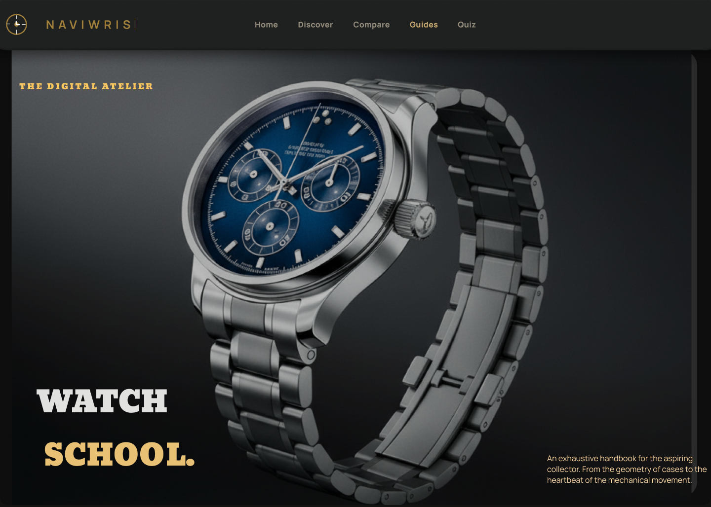

Selected Projects
A collection of UI/UX projects focused on research, strategy and visual design.

IoT Platform
Orbis Nova
A smart IoT ecosystem designed to simplify monitoring, automation and connected device management.

Responsive Web Experience
Watch Discovery
A luxury watch discovery platform helping users explore, compare and learn about premium timepieces across desktop and mobile.